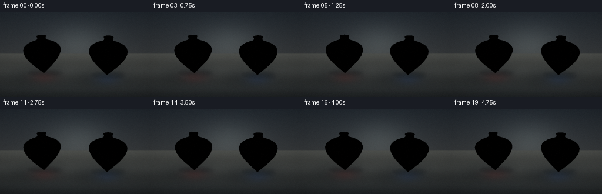
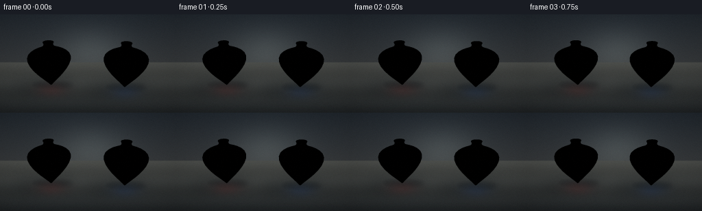

CODING AGENTS AS PIXEL WORLD MODELS
traex/DeepSeek-V4.1-Flash · instance_preservation_0038
点击播放 · 原生 RGB 像素
逐轮保存的候选
回放视频、检查图与代码变化。
每份候选均可单独播放。实际图片检查记录在下方工具轨迹中。
候选 01播放与检查图
点击播放 · 原生 RGB 像素


展开代码变化
--- 上一保存版本
+++ 本次保存版本
@@ -0,0 +1,467 @@
+"""Procedurally render two painted toy tops spinning on a studio table."""
+
+from __future__ import annotations
+
+import math
+from pathlib import Path
+
+import cv2
+import numpy as np
+from PIL import Image, ImageFilter
+
+import artifact_io
+
+
+WIDTH = 256
+HEIGHT = 144
+FRAMES = 20
+FPS = 4.0
+SS = 3
+OW = WIDTH * SS
+OH = HEIGHT * SS
+
+
+def normalize(vector: np.ndarray) -> np.ndarray:
+ length = np.linalg.norm(vector)
+ return vector / max(length, 1e-9)
+
+
+def smoothstep(edge0: float, edge1: float, value: np.ndarray | float):
+ t = np.clip((value - edge0) / (edge1 - edge0), 0.0, 1.0)
+ return t * t * (3.0 - 2.0 * t)
+
+
+def top_profile() -> list[tuple[float, float]]:
+ """(radius, height) points from the floor contact to the handle tip."""
+ return [
+ (0.000, 0.000),
+ (0.035, 0.030),
+ (0.075, 0.075),
+ (0.135, 0.135),
+ (0.220, 0.220),
+ (0.315, 0.315),
+ (0.410, 0.420),
+ (0.500, 0.535),
+ (0.575, 0.655),
+ (0.620, 0.775),
+ (0.625, 0.875),
+ (0.590, 0.965),
+ (0.520, 1.035),
+ (0.430, 1.090),
+ (0.335, 1.130),
+ (0.245, 1.160),
+ (0.180, 1.185),
+ (0.145, 1.215),
+ (0.135, 1.250),
+ (0.145, 1.280),
+ (0.160, 1.305),
+ (0.145, 1.330),
+ (0.105, 1.345),
+ (0.050, 1.350),
+ (0.000, 1.348),
+ ]
+
+
+def make_top_mesh(
+ center_x: float,
+ center_z: float,
+ palette: dict[str, np.ndarray],
+ phase: float,
+ tilt_x: float,
+ tilt_z: float,
+) -> dict[str, np.ndarray]:
+ """Create a closed-ish lathed mesh, already posed for the current frame."""
+ profile = top_profile()
+ ntheta = 96
+ radii = np.array([p[0] for p in profile], dtype=np.float64)
+ heights = np.array([p[1] for p in profile], dtype=np.float64)
+ theta = np.linspace(0.0, 2.0 * math.pi, ntheta, endpoint=False)
+
+ vertices = []
+ normals = []
+ for i, (radius, y) in enumerate(profile):
+ if i == 0:
+ slope = (radii[1] - radii[0]) / (heights[1] - heights[0])
+ elif i == len(profile) - 1:
+ slope = (radii[-1] - radii[-2]) / max(heights[-1] - heights[-2], 1e-8)
+ else:
+ slope = (radii[i + 1] - radii[i - 1]) / (heights[i + 1] - heights[i - 1])
+ for angle in theta:
+ c, s = math.cos(angle), math.sin(angle)
+ vertices.append((radius * c, y, radius * s))
+ normals.append(normalize(np.array((c, -slope, s))))
+
+ vertices = np.asarray(vertices, dtype=np.float64)
+ normals = np.asarray(normals, dtype=np.float64)
+
+ # Pose: small lean plus a precession term. The painted surface itself
+ # carries the much faster spin below.
+ rx = np.array(
+ [
+ [1.0, 0.0, 0.0],
+ [0.0, math.cos(tilt_x), -math.sin(tilt_x)],
+ [0.0, math.sin(tilt_x), math.cos(tilt_x)],
+ ]
+ )
+ rz = np.array(
+ [
+ [math.cos(tilt_z), -math.sin(tilt_z), 0.0],
+ [math.sin(tilt_z), math.cos(tilt_z), 0.0],
+ [0.0, 0.0, 1.0],
+ ]
+ )
+ spin = np.array(
+ [
+ [math.cos(phase), 0.0, math.sin(phase)],
+ [0.0, 1.0, 0.0],
+ [-math.sin(phase), 0.0, math.cos(phase)],
+ ]
+ )
+ rotation = rz @ rx @ spin
+ vertices = vertices @ rotation.T
+ normals = normals @ rotation.T
+ vertices[:, 0] += center_x
+ vertices[:, 2] += center_z
+
+ faces = []
+ face_normals = []
+ face_colors = []
+ sectors = 16
+ sector_width = 2.0 * math.pi / sectors
+ for ring in range(len(profile) - 1):
+ y_mid = 0.5 * (heights[ring] + heights[ring + 1])
+ for seg in range(ntheta):
+ nxt = (seg + 1) % ntheta
+ a = ring * ntheta + seg
+ b = ring * ntheta + nxt
+ c = (ring + 1) * ntheta + seg
+ d = (ring + 1) * ntheta + nxt
+ faces.extend(((a, b, c), (b, d, c)))
+
+ angle_mid = (seg + 0.5) * (2.0 * math.pi / ntheta) + phase
+ sector = int((angle_mid % (2.0 * math.pi)) // sector_width)
+ if sector % 2 == 0:
+ color = palette["main"].copy()
+ else:
+ color = palette["dark"].copy()
+
+ # Thin cream and metallic bands make the silhouette read as a toy
+ # top while the alternating sectors reveal the fast rotation.
+ if 0.225 <= y_mid <= 0.292:
+ color = palette["band"].copy()
+ elif 0.306 <= y_mid <= 0.345:
+ color = palette["metal"].copy()
+ elif 0.995 <= y_mid <= 1.055:
+ color = palette["band"].copy()
+ elif 1.105 <= y_mid <= 1.165:
+ color = palette["metal"].copy()
+ elif y_mid > 1.205:
+ color = palette["handle"].copy()
+
+ # A sparse row of cream dots is the strongest rotation cue on the
+ # upper shoulder.
+ if 0.715 <= y_mid <= 0.795:
+ local_angle = angle_mid % (math.pi / 4.0)
+ if min(local_angle, math.pi / 4.0 - local_angle) < 0.105:
+ color = palette["band"].copy()
+
+ face_colors.extend((color, color.copy()))
+
+ faces = np.asarray(faces, dtype=np.int32)
+ face_colors = np.asarray(face_colors, dtype=np.float64)
+ return {
+ "vertices": vertices,
+ "normals": normals,
+ "faces": faces,
+ "colors": face_colors,
+ }
+
+
+def camera_setup():
+ eye = np.array((0.0, 2.15, 6.15), dtype=np.float64)
+ target = np.array((0.0, 0.69, 0.0), dtype=np.float64)
+ up = np.array((0.0, 1.0, 0.0), dtype=np.float64)
+ forward = normalize(target - eye)
+ right = normalize(np.cross(forward, up))
+ true_up = normalize(np.cross(right, forward))
+ vertical_fov = math.radians(25.5)
+ focal = 1.0 / math.tan(vertical_fov * 0.5)
+ return eye, forward, right, true_up, focal
+
+
+def project_points(points: np.ndarray, camera, scale: int):
+ eye, forward, right, true_up, focal = camera
+ rel = points - eye
+ depth = rel @ forward
+ x = rel @ right
+ y = rel @ true_up
+ safe_depth = np.maximum(depth, 1e-5)
+ px = (x / safe_depth * focal * (OH * 0.5) + OW * 0.5) * scale / SS
+ py = (-y / safe_depth * focal * (OH * 0.5) + OH * 0.5) * scale / SS
+ return px, py, depth
+
+
+def rasterize_mesh(mesh, camera, output_w=OW, output_h=OH):
+ vertices = mesh["vertices"]
+ normals = mesh["normals"]
+ faces = mesh["faces"]
+ px, py, depth = project_points(vertices, camera, SS)
+
+ rgb = np.zeros((output_h, output_w, 3), dtype=np.float32)
+ alpha = np.zeros((output_h, output_w), dtype=np.float32)
+ zbuf = np.full((output_h, output_w), np.inf, dtype=np.float32)
+
+ eye, _, _, _, _ = camera
+ light = normalize(np.array((-0.42, 0.84, 0.46), dtype=np.float64))
+ fill = normalize(np.array((0.78, 0.35, 0.52), dtype=np.float64))
+ view_dir = normalize(eye - np.mean(vertices, axis=0))
+
+ for face_index, (i0, i1, i2) in enumerate(faces):
+ x0, y0 = px[i0], py[i0]
+ x1, y1 = px[i1], py[i1]
+ x2, y2 = px[i2], py[i2]
+ area = (x1 - x0) * (y2 - y0) - (x2 - x0) * (y1 - y0)
+ if abs(area) < 1e-7:
+ continue
+
+ min_x = max(0, int(math.floor(min(x0, x1, x2))))
+ max_x = min(output_w - 1, int(math.ceil(max(x0, x1, x2))))
+ min_y = max(0, int(math.floor(min(y0, y1, y2))))
+ max_y = min(output_h - 1, int(math.ceil(max(y0, y1, y2))))
+ if min_x > max_x or min_y > max_y:
+ continue
+
+ xs = np.arange(min_x, max_x + 1, dtype=np.float32) + 0.5
+ ys = np.arange(min_y, max_y + 1, dtype=np.float32) + 0.5
+ gx, gy = np.meshgrid(xs, ys)
+ w0 = ((x1 - gx) * (y2 - gy) - (x2 - gx) * (y1 - gy)) / area
+ w1 = ((x2 - gx) * (y0 - gy) - (x0 - gx) * (y2 - gy)) / area
+ w2 = 1.0 - w0 - w1
+ inside = (w0 >= -1e-5) & (w1 >= -1e-5) & (w2 >= -1e-5)
+ if not np.any(inside):
+ continue
+
+ inv_z = w0 / depth[i0] + w1 / depth[i1] + w2 / depth[i2]
+ z = 1.0 / np.maximum(inv_z, 1e-7)
+ region_z = zbuf[min_y : max_y + 1, min_x : max_x + 1]
+ mask = inside & (z < region_z)
+ if not np.any(mask):
+ continue
+
+ n = (
+ w0[..., None] * normals[i0]
+ + w1[..., None] * normals[i1]
+ + w2[..., None] * normals[i2]
+ )
+ n /= np.maximum(np.linalg.norm(n, axis=2, keepdims=True), 1e-8)
+ diffuse = np.clip(n @ light, 0.0, 1.0)
+ bounce = np.clip(n @ fill, 0.0, 1.0)
+ rim = np.clip(1.0 - np.abs(n @ view_dir), 0.0, 1.0) ** 2.3
+
+ half_vec = normalize(light + view_dir)
+ specular = np.clip(n @ half_vec, 0.0, 1.0) ** 48.0
+ broad_specular = np.clip(n @ half_vec, 0.0, 1.0) ** 10.0
+
+ base = mesh["colors"][face_index] / 255.0
+ lit = (
+ base
+ * (0.22 + 0.92 * diffuse[..., None] + 0.16 * bounce[..., None])
+ + np.array((0.84, 0.91, 1.0)) * (0.16 * rim[..., None])
+ + np.array((1.0, 0.93, 0.79)) * (0.55 * specular[..., None])
+ + np.array((1.0, 0.97, 0.89)) * (0.075 * broad_specular[..., None])
+ )
+ # Gentle tone curve retains saturated paint without clipped highlights.
+ lit = 1.0 - np.exp(-1.12 * np.maximum(lit, 0.0))
+ lit = np.clip(lit, 0.0, 1.0) ** (1.0 / 1.08)
+
+ region_rgb = rgb[min_y : max_y + 1, min_x : max_x + 1]
+ region_a = alpha[min_y : max_y + 1, min_x : max_x + 1]
+ region_rgb[mask] = lit[mask]
+ region_a[mask] = 1.0
+ region_z[mask] = z[mask]
+
+ return rgb, alpha, zbuf
+
+
+def make_background():
+ yy = np.linspace(0.0, 1.0, OH, dtype=np.float32)[:, None]
+ xx = np.linspace(0.0, 1.0, OW, dtype=np.float32)[None, :]
+
+ top = np.array((35.0, 42.0, 49.0), dtype=np.float32)
+ bottom = np.array((73.0, 72.0, 69.0), dtype=np.float32)
+ bg = top[None, None, :] * (1.0 - yy[..., None]) + bottom[None, None, :] * yy[..., None]
+ bg = np.broadcast_to(bg, (OH, OW, 3)).copy()
+
+ # Broad studio light behind the objects.
+ glow = np.exp(-(((xx - 0.52) / 0.30) ** 2 + ((yy - 0.38) / 0.36) ** 2) * 2.2)
+ bg += glow[..., None] * np.array((22.0, 24.0, 23.0), dtype=np.float32)
+
+ horizon = int(OH * 0.49)
+ floor_t = np.clip((np.arange(OH, dtype=np.float32) - horizon) / (OH - horizon), 0.0, 1.0)
+ floor_color = (
+ np.array((73.0, 75.0, 72.0), dtype=np.float32)[None, :]
+ * (1.0 - floor_t[:, None])
+ + np.array((34.0, 38.0, 40.0), dtype=np.float32)[None, :]
+ * floor_t[:, None]
+ )
+ floor_mask = np.arange(OH)[:, None] >= horizon
+ bg = np.where(floor_mask[..., None], floor_color[:, None, :], bg)
+
+ # Soft perspective floor bands, kept subtle so the tops remain the focus.
+ v = np.clip((np.arange(OH, dtype=np.float32) - horizon) / (OH - horizon), 0.0, 1.0)
+ band = 0.012 * np.cos(v * math.pi * 5.0)
+ bg += (band[:, None] * floor_mask * 255.0)[..., None] * np.array((0.65, 0.70, 0.72))
+
+ vignette = 1.0 - 0.20 * (
+ ((xx - 0.5) / 0.72) ** 2 + ((yy - 0.48) / 0.72) ** 2
+ )
+ bg *= np.clip(vignette[..., None], 0.70, 1.0)
+ return np.clip(bg, 0.0, 255.0)
+
+
+def add_shadow_layer(background, camera):
+ """Composite soft contact and cast shadows onto the studio floor."""
+ shadow = np.zeros((OH, OW), dtype=np.float32)
+ top_specs = [
+ (-1.10, -0.10, 0.72, 1.00),
+ (1.08, 0.10, 0.68, 0.94),
+ ]
+ for cx, cz, radius, strength in top_specs:
+ points = np.array(
+ [
+ [cx - radius, 0.003, cz - 0.42],
+ [cx + radius, 0.003, cz - 0.42],
+ [cx + radius, 0.003, cz + 0.42],
+ [cx - radius, 0.003, cz + 0.42],
+ ]
+ )
+ px, py, _ = project_points(points, camera, SS)
+ center = np.array([px.mean(), py.mean()], dtype=np.float32)
+ width = max(10.0, float(np.max(px) - np.min(px)))
+ height = max(5.0, float(np.max(py) - np.min(py)))
+
+ # A blurred directional shadow anchors the toy to the floor.
+ cast = np.zeros((OH, OW), dtype=np.uint8)
+ cv2.ellipse(
+ cast,
+ (int(center[0] - width * 0.16), int(center[1] + height * 0.12)),
+ (max(2, int(width * 0.58)), max(2, int(height * 0.78))),
+ -8,
+ 0,
+ 360,
+ 255,
+ -1,
+ )
+ cast_blur = cv2.GaussianBlur(cast.astype(np.float32) / 255.0, (0, 0), width * 0.13)
+ shadow = np.maximum(shadow, cast_blur * 0.33 * strength)
+
+ contact = np.zeros((OH, OW), dtype=np.uint8)
+ cv2.ellipse(
+ contact,
+ (int(center[0]), int(center[1])),
+ (max(3, int(width * 0.42)), max(2, int(height * 0.50))),
+ 0,
+ 0,
+ 360,
+ 255,
+ -1,
+ )
+ contact_blur = cv2.GaussianBlur(contact.astype(np.float32) / 255.0, (0, 0), width * 0.055)
+ shadow = np.maximum(shadow, contact_blur * 0.54 * strength)
+
+ shadow_color = np.array((18.0, 22.0, 24.0), dtype=np.float32)
+ out = background * (1.0 - shadow[..., None]) + shadow_color * shadow[..., None]
+ return out
+
+
+def add_reflections(background, object_rgb, object_alpha, camera):
+ """Add restrained colored floor glints below each top."""
+ out = background.copy()
+ for cx, cz, color, strength in [
+ (-1.10, -0.10, np.array((176.0, 40.0, 38.0)), 0.10),
+ (1.08, 0.10, np.array((32.0, 84.0, 187.0)), 0.10),
+ ]:
+ p = np.array([[cx, 0.01, cz]], dtype=np.float64)
+ px, py, _ = project_points(p, camera, SS)
+ cx_px, cy_px = float(px[0]), float(py[0])
+ yy, xx = np.mgrid[0:OH, 0:OW].astype(np.float32)
+ mask = np.exp(
+ -(
+ ((xx - cx_px) / (OW * 0.13)) ** 2
+ + ((yy - cy_px - OH * 0.055) / (OH * 0.10)) ** 2
+ )
+ * 2.5
+ )
+ out = out * (1.0 - mask[..., None] * strength) + color[None, None, :] * (
+ mask[..., None] * strength
+ )
+ return out
+
+
+def render_frame(frame_index: int):
+ t = frame_index / FPS
+ camera = camera_setup()
+ background = make_background()
+ background = add_shadow_layer(background, camera)
+
+ red_palette = {
+ "main": np.array((218.0, 43.0, 39.0)),
+ "dark": np.array((153.0, 22.0, 28.0)),
+ "band": np.array((239.0, 218.0, 166.0)),
+ "metal": np.array((222.0, 160.0, 64.0)),
+ "handle": np.array((191.0, 33.0, 31.0)),
+ }
+ blue_palette = {
+ "main": np.array((31.0, 92.0, 213.0)),
+ "dark": np.array((18.0, 52.0, 147.0)),
+ "band": np.array((222.0, 235.0, 231.0)),
+ "metal": np.array((200.0, 177.0, 101.0)),
+ "handle": np.array((28.0, 74.0, 185.0)),
+ }
+
+ red_phase = 0.36 + t * (2.0 * math.pi * 0.58)
+ blue_phase = 2.15 - t * (2.0 * math.pi * 0.49)
+ red_tilt_x = 0.030 + 0.024 * math.sin(2.0 * math.pi * 0.55 * t + 0.4)
+ red_tilt_z = 0.026 * math.sin(2.0 * math.pi * 0.42 * t + 1.1)
+ blue_tilt_x = 0.026 + 0.020 * math.sin(2.0 * math.pi * 0.48 * t + 2.0)
+ blue_tilt_z = 0.021 * math.sin(2.0 * math.pi * 0.37 * t + 0.2)
+
+ red = make_top_mesh(-1.10, -0.10, red_palette, red_phase, red_tilt_x, red_tilt_z)
+ blue = make_top_mesh(1.08, 0.10, blue_palette, blue_phase, blue_tilt_x, blue_tilt_z)
+
+ combined = {
+ "vertices": np.concatenate([red["vertices"], blue["vertices"]], axis=0),
+ "normals": np.concatenate([red["normals"], blue["normals"]], axis=0),
+ "faces": np.concatenate(
+ [red["faces"], blue["faces"] + len(red["vertices"])], axis=0
+ ),
+ "colors": np.concatenate([red["colors"], blue["colors"]], axis=0),
+ }
+ object_rgb, object_alpha, _ = rasterize_mesh(combined, camera)
+
+ canvas = add_reflections(background, object_rgb, object_alpha, camera)
+ a = object_alpha[..., None]
+ # Premultiplied edge pixels from the supersampled mask stay clean after
+ # Lanczos reduction.
+ canvas = object_rgb * a + canvas * (1.0 - a)
+ canvas = np.clip(canvas, 0.0, 255.0).astype(np.uint8)
+ small = cv2.resize(canvas, (WIDTH, HEIGHT), interpolation=cv2.INTER_AREA)
+
+ # Tiny film-like color separation and grain prevent an overly synthetic
+ # digital surface at this low delivery resolution.
+ rng = np.random.default_rng(3800 + frame_index)
+ grain = rng.normal(0.0, 0.85, (HEIGHT, WIDTH, 1)).astype(np.float32)
+ small_f = small.astype(np.float32) + grain
+ small_f[..., 0] += 0.25
+ small_f[..., 2] -= 0.15
+ return np.clip(small_f, 0.0, 255.0).astype(np.uint8)
+
+
+def main():
+ case_dir = Path(__file__).resolve().parent
+ frames = np.stack([render_frame(i) for i in range(FRAMES)], axis=0)
+ artifact_io.save(frames, case_dir)
+
+
+if __name__ == "__main__":
+ main()
候选 02播放与检查图
点击播放 · 原生 RGB 像素
展开代码变化
--- 上一保存版本
+++ 本次保存版本
@@ -272,7 +272,7 @@
)
# Gentle tone curve retains saturated paint without clipped highlights.
lit = 1.0 - np.exp(-1.12 * np.maximum(lit, 0.0))
- lit = np.clip(lit, 0.0, 1.0) ** (1.0 / 1.08)
+ lit = np.clip(lit, 0.0, 1.0) ** (1.0 / 1.08) * 255.0
region_rgb = rgb[min_y : max_y + 1, min_x : max_x + 1]
region_a = alpha[min_y : max_y + 1, min_x : max_x + 1]
候选 03播放与检查图
可观测工具轨迹
实际执行的命令与返回图片。
命令 1exit 0
/bin/bash -c "sed -n '1,240p' prompt.txt"
命令 2exit 0
/bin/bash -c "sed -n '1,260p' GENERATION_RULES.md"
命令 3exit 0
/bin/bash -c 'cat task_spec.json'
命令 4exit 0
/bin/bash -c "find . -maxdepth 2 -type f -printf '%p\\n' | sort"
命令 5exit 0
/bin/bash -c "sed -n '1,260p' artifact_io.py"
命令 6exit 0
/bin/bash -c "sed -n '1,260p' player_template.html"
命令 7exit 0
/bin/bash -c "python - <<'PY'
import importlib.util
for m in ['numpy','PIL','cv2','imageio','scipy','skimage']:
print(m, bool(importlib.util.find_spec(m)))
PY"命令 8exit 1
/bin/bash -c 'python generate.py'
命令 9exit 0
/bin/bash -c 'python generate.py'
命令 10exit 0
/bin/bash -c "python - <<'PY'
from PIL import Image
im=Image.open('inspection.png')
print(im.size)
PY"命令 11exit 0
/bin/bash -c 'command -v chafa || command -v viu || command -v jp2 || command -v img2txt || true'
命令 12exit 0
/bin/bash -c "python - <<'PY'
import numpy as np
from PIL import Image
frames=np.stack([np.array(Image.open(f'frames/{i:02d}.png')) for i in range(20)])
for i,f in enumerate(frames):
bg=np.array([f[5,5,0],f[5,5,1],f[5,5,2]])
d=np.abs(f.astype(int)-bg).sum(2)
yy,xx=np.where(d>60)
print(f'{i:02d}: bbox=({xx.min()},{yy.min()})-({xx.max()},{yy.max()}) mean={f.mean():.2f}')
print('adjacent MAE:', [round(np.abs(frames[i].astype(float)-frames[i-1]).mean(),2) for i in range(1,20)])
PY"命令 13exit 0
/bin/bash -c "python - <<'PY'
from PIL import Image, ImageOps, ImageDraw
sheet=Image.open('inspection.png')
# Make a high-contrast terminal-friendly proof of the first, middle and last frame.
canvas=Image.new('RGB',(768,216),(18,20,23))
for j,i in enumerate([0,10,19]):
im=Image.open(f'frames/{i:02d}.png')
canvas.paste(im,(j*256,0))
canvas.save('.tmp/proof.png')
PY"命令 14exit 0
/bin/bash -c "python - <<'PY'
from PIL import Image
import numpy as np
for i in [0,5,10,15,19]:
a=np.array(Image.open(f'frames/{i:02d}.png')).astype(int)
red=(a[:,:,0]>a[:,:,1]+35)&(a[:,:,0]>a[:,:,2]+25)&(a[:,:,0]>90)
blue=(a[:,:,2]>a[:,:,0]+30)&(a[:,:,2]>a[:,:,1]+12)&(a[:,:,2]>90)
for name,m in [('red',red),('blue',blue)]:
y,x=np.where(m)
print(i,name,'pixels',len(x),'bbox', (x.min(),y.min(),x.max(),y.max()) if len(x) else None)
PY"命令 15exit 0
/bin/bash -c "python - <<'PY'
from PIL import Image
import numpy as np
im=np.array(Image.open('frames/00.png'))
# Most common colors and max saturation
q=(im//16)*16
vals,c=np.unique(q.reshape(-1,3),axis=0,return_counts=True)
for idx in np.argsort(c)[-15:][::-1]: print(vals[idx],c[idx])
print('min max channels',im.reshape(-1,3).min(0),im.reshape(-1,3).max(0))
mx=im.max(2).astype(int); mn=im.min(2).astype(int)
print('max sat', (mx-mn).max(), 'pixels sat>40', ((mx-mn)>40).sum())
y,x=np.unravel_index(np.argmax(mx-mn),mx.shape);print('sat pixel',x,y,im[y,x])
PY"命令 16exit 0
/bin/bash -c "python - <<'PY'
import numpy as np
import generate
m=generate.make_top_mesh(-1.10,-0.1,{'main':np.array([218.,43.,39.]),'dark':np.array([153.,22.,28.]),'band':np.array([239.,218.,166.]),'metal':np.array([222.,160.,64.]),'handle':np.array([191.,33.,31.])},0.36,.03,.02)
cam=generate.camera_setup()
rgb,a,z=generate.rasterize_mesh(m,cam)
print('alpha',a.sum(),a.max())
print('rgb at alpha',rgb[a>.5].min(0),rgb[a>.5].max(0),rgb[a>.5].mean(0))
print('face colors unique',np.unique(m['colors'],axis=0)[:10])
PY"命令 17exit 0
/bin/bash -c "python - <<'PY' import generate, numpy as np from PIL import Image im=generate.render_frame(0) print(im.shape,im.min(),im.max(),im.mean()) y,x=np.unravel_index(np.argmax(im.max(2).astype(int)-im.min(2).astype(int)), im.shape[:2]) print(x,y,im[y,x]) PY"
命令 18exit 0
/bin/bash -c "python - <<'PY' import generate,numpy as np cam=generate.camera_setup(); bg=generate.add_shadow_layer(generate.make_background(),cam) p=np.array([[-1.1,0,-.1]]); px,py,d=generate.project_points(p,cam,1) print(px,py,d) for pt in [[-1.1,0.5,-.1],[1.08,0.5,.1],[0,0,0]]: print(pt,generate.project_points(np.array([pt]),cam,1)[:2]) print(bg.min(),bg.max(),bg.mean()) PY"
命令 19exit 0
/bin/bash -c "python - <<'PY'
import generate,numpy as np
cam=generate.camera_setup(); bg=generate.add_shadow_layer(generate.make_background(),cam)
pal={'main':np.array((218.,43.,39.)),'dark':np.array((153.,22.,28.)),'band':np.array((239.,218.,166.)),'metal':np.array((222.,160.,64.)),'handle':np.array((191.,33.,31.))}
m=generate.make_top_mesh(-1.1,-.1,pal,.36,.03,.02)
rgb,a,z=generate.rasterize_mesh(m,cam)
canvas=generate.add_reflections(bg,rgb,a,cam)
canvas=rgb*a[...,None]+canvas*(1-a[...,None])
small=__import__('cv2').resize(np.clip(canvas,0,255).astype(np.uint8),(256,144),interpolation=__import__('cv2').INTER_AREA)
print('small object max',small[40:110,20:130].max(axis=(0,1)), 'mean',small[40:110,20:130].mean(axis=(0,1)))
print('small global',small.min(),small.max(),small.mean())
# compare alpha at 256 from object mask via resizing
sa=__import__('cv2').resize((a*255).astype(np.uint8),(256,144),interpolation=__import__('cv2').INTER_AREA)
print('alpha px', (sa>30).sum(),sa.max())
PY"命令 20exit 0
/bin/bash -c "python - <<'PY'
import generate,numpy as np
cam=generate.camera_setup(); bg=generate.add_shadow_layer(generate.make_background(),cam)
pal={'main':np.array((218.,43.,39.)),'dark':np.array((153.,22.,28.)),'band':np.array((239.,218.,166.)),'metal':np.array((222.,160.,64.)),'handle':np.array((191.,33.,31.))}
m=generate.make_top_mesh(-1.1,-.1,pal,.36,.03,.02)
rgb,a,z=generate.rasterize_mesh(m,cam)
canvas=generate.add_reflections(bg,rgb,a,cam)
canvas=rgb*a[...,None]+canvas*(1-a[...,None])
y,x=np.where(a>.5)
print('obj bbox',x.min(),x.max(),y.min(),y.max())
print('rgb mean',rgb[a>.5].mean(0),'max',rgb[a>.5].max(0))
# high alpha output color quantiles
v=canvas[a>.5]
print('canvas mean',v.mean(0),'q90',np.quantile(v,.9,axis=0),'q99',np.quantile(v,.99,axis=0))
PY"命令 21exit 0
/bin/bash -c "python - <<'PY'
import numpy as np
from PIL import Image
im=np.array(Image.open('frames/00.png')).astype(int)
for x,y in [(50,90),(75,90),(180,90),(120,90),(100,90),(150,90)]:
print(x,y,im[y,x], im[y-1:y+2,x-1:x+2].mean((0,1)))
PY"命令 22exit 0
/bin/bash -c "python - <<'PY'
import generate,numpy as np
cam=generate.camera_setup()
pal={'main':np.array((218.,43.,39.)),'dark':np.array((153.,22.,28.)),'band':np.array((239.,218.,166.)),'metal':np.array((222.,160.,64.)),'handle':np.array((191.,33.,31.))}
m=generate.make_top_mesh(-1.1,-.1,pal,.36,.03,.02)
rgb,a,z=generate.rasterize_mesh(m,cam)
# locate alpha and inspect background alpha composition before resizing
for x,y in [(200,200),(150,200),(200,250)]: print(x,y,a[y,x],rgb[y,x])
PY"命令 23exit 0
/bin/bash -c "python - <<'PY'
import generate,numpy as np
cam=generate.camera_setup()
pal={'main':np.array((218.,43.,39.)),'dark':np.array((153.,22.,28.)),'band':np.array((239.,218.,166.)),'metal':np.array((222.,160.,64.)),'handle':np.array((191.,33.,31.))}
m=generate.make_top_mesh(-1.1,-.1,pal,.36,.03,.02)
rgb,a,z=generate.rasterize_mesh(m,cam)
print(rgb.shape)
for x,y in [(75*3,90*3),(200,200),(150,200)]:print(x,y,a[y,x],rgb[y,x])
PY"命令 24exit 0
/bin/bash -c "python - <<'PY'
import generate,numpy as np,cv2
cam=generate.camera_setup(); bg=generate.add_shadow_layer(generate.make_background(),cam)
pal={'main':np.array((218.,43.,39.)),'dark':np.array((153.,22.,28.)),'band':np.array((239.,218.,166.)),'metal':np.array((222.,160.,64.)),'handle':np.array((191.,33.,31.))}
m=generate.make_top_mesh(-1.1,-.1,pal,.36,.03,.02)
rgb,a,z=generate.rasterize_mesh(m,cam)
canvas=rgb*a[...,None]+bg*(1-a[...,None])
small=cv2.resize(np.clip(canvas,0,255).astype(np.uint8),(256,144),interpolation=cv2.INTER_AREA)
print(small[90,75], small[66,75],small[80,75],small[90,50])
print(small.max(axis=(0,1)))
PY"命令 25exit 0
/bin/bash -c "python - <<'PY'
import generate,numpy as np,cv2
cam=generate.camera_setup(); bg=generate.add_shadow_layer(generate.make_background(),cam)
pal={'main':np.array((218.,43.,39.)),'dark':np.array((153.,22.,28.)),'band':np.array((239.,218.,166.)),'metal':np.array((222.,160.,64.)),'handle':np.array((191.,33.,31.))}
m=generate.make_top_mesh(-1.1,-.1,pal,.36,.03,.02)
rgb,a,z=generate.rasterize_mesh(m,cam)
canvas=rgb*a[...,None]+bg*(1-a[...,None])
print('canvas',canvas[270,225],canvas[250,225],canvas[200,225])
small=cv2.resize(np.clip(canvas,0,255).astype(np.uint8),(256,144),interpolation=cv2.INTER_AREA)
print('small',small[90,75], small[83,75],small[66,75])
print('small rect',small[70:100,65:85].max(),small[70:100,65:85].mean())
PY"命令 26exit -1
/bin/bash -c "python - <<'PY' import numpy as np, cv2 x=np.array([[[.5,.2,.3]]],np.float32) print(x, cv2.resize(x,(1,1),interpolation=cv2.INTER_AREA)) print(cv2.__version__) PY"
命令 27exit 0
/bin/bash -c "python - <<'PY' import numpy as np, cv2 x=np.array([[[.5,.2,.3]]],np.float32) print(x, cv2.resize(x,(1,1),interpolation=cv2.INTER_AREA)) print(cv2.__version__) PY"
命令 28exit 0
/bin/bash -c "python - <<'PY' import numpy as np, cv2 x=np.array([[[100,50,60],[100,50,60]]]*2,np.float32) print(cv2.resize(x,(1,1),interpolation=cv2.INTER_AREA)) print(cv2.resize(x,(1,1),interpolation=cv2.INTER_LINEAR)) PY"
命令 29exit 0
/bin/bash -c "python - <<'PY' import numpy as np,cv2 x=np.arange(768*432*3,dtype=np.uint8).reshape(432,768,3) y=cv2.resize(x,(256,144),interpolation=cv2.INTER_AREA) print(x[0,0],x[2,2],y[0,0],x[1,1],x[0:3,0:3].mean((0,1))) PY"
命令 30exit 0
/bin/bash -c "python - <<'PY'
import generate,numpy as np,cv2
cam=generate.camera_setup(); bg=generate.add_shadow_layer(generate.make_background(),cam)
pal={'main':np.array((218.,43.,39.)),'dark':np.array((153.,22.,28.)),'band':np.array((239.,218.,166.)),'metal':np.array((222.,160.,64.)),'handle':np.array((191.,33.,31.))}
m=generate.make_top_mesh(-1.1,-.1,pal,.36,.03,.02)
rgb,a,z=generate.rasterize_mesh(m,cam)
canvas=rgb*a[...,None]+bg*(1-a[...,None])
print('before',canvas[240:280,210:250].max())
small=cv2.resize(np.clip(canvas,0,255).astype(np.uint8),(256,144),interpolation=cv2.INTER_AREA)
print('after',small[80:93,70:83].max(), small[80:93,70:83])
PY"命令 31exit 0
/bin/bash -c "python - <<'PY' import numpy as np,cv2 x=np.random.default_rng(0).random((432,768,3)).astype(np.float32) y=cv2.resize(x,(256,144),interpolation=cv2.INTER_AREA) print(y.min(),y.max(),y.mean(),x.mean()) z=np.clip(x,0,255).astype(np.uint8) y2=cv2.resize(z,(256,144),interpolation=cv2.INTER_AREA) print(y2.min(),y2.max(),y2.mean()) PY"
命令 32exit 0
/bin/bash -c "python - <<'PY' import numpy as np,cv2 x=np.random.default_rng(0).random((432,768,3)).astype(np.float32) z=(np.clip(x,0,1)*255).astype(np.uint8) y2=cv2.resize(z,(256,144),interpolation=cv2.INTER_AREA) print(z.min(),z.max(),z.mean(),y2.min(),y2.max(),y2.mean()) PY"
命令 33exit 0
/bin/bash -c "python - <<'PY'
import generate,numpy as np,cv2
cam=generate.camera_setup(); bg=generate.add_shadow_layer(generate.make_background(),cam)
pal={'main':np.array((218.,43.,39.)),'dark':np.array((153.,22.,28.)),'band':np.array((239.,218.,166.)),'metal':np.array((222.,160.,64.)),'handle':np.array((191.,33.,31.))}
m=generate.make_top_mesh(-1.1,-.1,pal,.36,.03,.02)
rgb,a,z=generate.rasterize_mesh(m,cam)
canvas=rgb*a[...,None]+bg*(1-a[...,None])
print(canvas.min(),canvas.max(),canvas.mean())
canvas8=np.clip(canvas,0,255).astype(np.uint8)
print(canvas8.min(),canvas8.max(),canvas8.mean())
small=cv2.resize(canvas8,(256,144),interpolation=cv2.INTER_AREA)
print(small.min(),small.max(),small.mean())
PY"命令 34exit 0
/bin/bash -c "python - <<'PY'
import generate,numpy as np,cv2
cam=generate.camera_setup(); bg=generate.add_shadow_layer(generate.make_background(),cam)
pal={'main':np.array((218.,43.,39.)),'dark':np.array((153.,22.,28.)),'band':np.array((239.,218.,166.)),'metal':np.array((222.,160.,64.)),'handle':np.array((191.,33.,31.))}
m=generate.make_top_mesh(-1.1,-.1,pal,.36,.03,.02)
rgb,a,z=generate.rasterize_mesh(m,cam)
canvas=rgb*a[...,None]+bg*(1-a[...,None])
canvas8=np.clip(canvas,0,255).astype(np.uint8)
small=cv2.resize(canvas8,(256,144),interpolation=cv2.INTER_AREA)
# expected top at 80,75; background around 50,50
for y in [60,65,70,75,80,85,90,95]:
print(y, small[y,50],small[y,75],small[y,100])
PY"命令 35exit 0
/bin/bash -c "python - <<'PY'
import generate,numpy as np,cv2
cam=generate.camera_setup(); bg=generate.add_shadow_layer(generate.make_background(),cam)
pal={'main':np.array((218.,43.,39.)),'dark':np.array((153.,22.,28.)),'band':np.array((239.,218.,166.)),'metal':np.array((222.,160.,64.)),'handle':np.array((191.,33.,31.))}
m=generate.make_top_mesh(-1.1,-.1,pal,.36,.03,.02)
rgb,a,z=generate.rasterize_mesh(m,cam)
canvas=rgb*a[...,None]+bg*(1-a[...,None]);canvas8=np.clip(canvas,0,255).astype(np.uint8)
for y,x in [(180,150),(270,225),(300,150),(300,300)]: print('canvas8',x,y,canvas8[y,x],canvas[y,x])
for y in [60,65,70,75,80,85,90,95]: print('canvas8 top',y,canvas8[y*3,75*3])
PY"命令 36exit 0
/bin/bash -c "python - <<'PY' import numpy as np,cv2 x=np.full((432,768,3),100,np.float32) x[180,150]=[200,100,50] print(np.clip(x,0,255).astype(np.uint8)[180,150]) y=cv2.resize(np.clip(x,0,255).astype(np.uint8),(256,144),interpolation=cv2.INTER_AREA) print(y[60,50]) PY"
命令 37exit 0
/bin/bash -c 'python generate.py'
命令 38exit 0
/bin/bash -c "python - <<'PY'
from PIL import Image
import numpy as np
frames=np.stack([np.array(Image.open(f'frames/{i:02d}.png')) for i in range(20)])
print('shape',frames.shape,'dtype',frames.dtype,'range',frames.min(),frames.max(),'mean',frames.mean())
for i in [0,5,10,15,19]:
a=frames[i].astype(int)
red=(a[:,:,0]>a[:,:,1]+35)&(a[:,:,0]>a[:,:,2]+25)&(a[:,:,0]>90)
blue=(a[:,:,2]>a[:,:,0]+30)&(a[:,:,2]>a[:,:,1]+12)&(a[:,:,2]>90)
print(i,'red',red.sum(),'blue',blue.sum())
for i in range(1,20):
d=np.abs(frames[i].astype(float)-frames[i-1]).mean()
print(f'{i:02d} delta {d:.2f}')
PY"命令 39exit 0
/bin/bash -c "python - <<'PY'
from PIL import Image
im=Image.open('inspection.png')
print('inspection',im.size,im.mode)
# six equal-sized crops for a coarse color/layout probe
for i in [0,1,2,3,4,5,6,7]:
x=(i%4)*256; y=21+(i//4)*165
crop=im.crop((x,y,x+256,y+144))
a=list(crop.resize((16,9)).getdata())
print(i, 'brightness',sum(sum(p) for p in a)//len(a), 'sample', a[40])
PY"命令 40exit 0
/bin/bash -c "python - <<'PY'
import numpy as np
from PIL import Image
for i in [0,10,19]:
a=np.array(Image.open(f'frames/{i:02d}.png')).astype(int)
# color-specific extents
red=(a[:,:,0]>a[:,:,1]+35)&(a[:,:,0]>a[:,:,2]+25)&(a[:,:,0]>90)
blue=(a[:,:,2]>a[:,:,0]+30)&(a[:,:,2]>a[:,:,1]+12)&(a[:,:,2]>90)
for name,m in [('R',red),('B',blue)]:
y,x=np.where(m)
print(i,name,(x.min(),y.min(),x.max(),y.max()),'mean',a[m].mean(0).round(1))
PY"命令 41exit 0
/bin/bash -c "python - <<'PY'
import numpy as np
from PIL import Image
# Object-mask rotation signature: compare color maps in each fixed top bbox.
frames=np.stack([np.array(Image.open(f'frames/{i:02d}.png')).astype(np.float32) for i in range(20)])
for label,box in [('red',(25,32,112,88)),('blue',(140,32,227,88))]:
x0,y0,x1,y1=box
region=frames[:,y0:y1,x0:x1]
print(label,'temporal std mean',region.std(0).mean(),'bbox mean',region.mean((1,2,3)))
# Verify distinct painted-sector colors survive in top regions.
for i in [0,10,19]:
a=frames[i]
red=a[38:78,39:103].reshape(-1,3)
blue=a[39:80,151:216].reshape(-1,3)
print(i,'red channel std',red.std(0).round(1),'blue channel std',blue.std(0).round(1))
PY"命令 42exit 0
/bin/bash -c "python - <<'PY'
from pathlib import Path
from PIL import Image
import numpy as np, json
p=Path('.')
spec=json.loads((p/'task_spec.json').read_text())
with np.load(p/'pixels.npz') as z:
a=z['pixels']
print('npz',a.shape,a.dtype,'range',int(a.min()),int(a.max()))
print('png count',len(list((p/'frames').glob('*.png'))))
print('html bytes',(p/'index.html').stat().st_size)
print('first/last mean',np.array(Image.open(p/'frames/00.png')).mean(),np.array(Image.open(p/'frames/19.png')).mean())
PY"命令 43exit 0
/bin/bash -c "python - <<'PY'
from PIL import Image
import numpy as np
frames=np.stack([np.array(Image.open(f'frames/{i:02d}.png')).astype(np.float32) for i in range(20)])
# Painted-sector motion should be concentrated in each top, not the backdrop.
for name,(x0,y0,x1,y1) in {'red':(38,37,104,79),'blue':(150,38,217,81)}.items():
d=np.abs(np.diff(frames[:,y0:y1,x0:x1],axis=0)).mean(axis=(0,1,2))
print(name,'per-frame object change mean/min/max',d.mean(),d.min(),d.max())
# Ensure palette present throughout, and no clipping at either end.
print('near-black fraction',float((frames.max(3)<10).mean()),'near-white fraction',float((frames.min(3)>245).mean()))
PY"命令 44exit 0
/bin/bash -c 'python -m py_compile generate.py'
命令 45exit 0
/bin/bash -c 'git status --short 2>/dev/null || true'
命令 46exit 0
/bin/bash -c "python - <<'PY'
from PIL import Image
import numpy as np
im=np.array(Image.open('frames/00.png'))
# Downsample by area, classify red, blue, light, dark.
small=np.array(Image.fromarray(im).resize((64,36),Image.Resampling.BOX)).astype(int)
chars=[]
for y in range(36):
row=''
for x in range(64):
r,g,b=small[y,x]
if r>g+18 and r>b+12: c='R'
elif b>r+18 and b>g+5: c='B'
elif r+g+b>240: c='+'
elif r+g+b>120: c='.'
else: c=' '
row+=c
chars.append(row)
print('\\n'.join(chars))
PY"保存候选 3 份；完成命令 46 次；可验证图片返回 0 张。原始 API 响应与完整日志保留在本地。